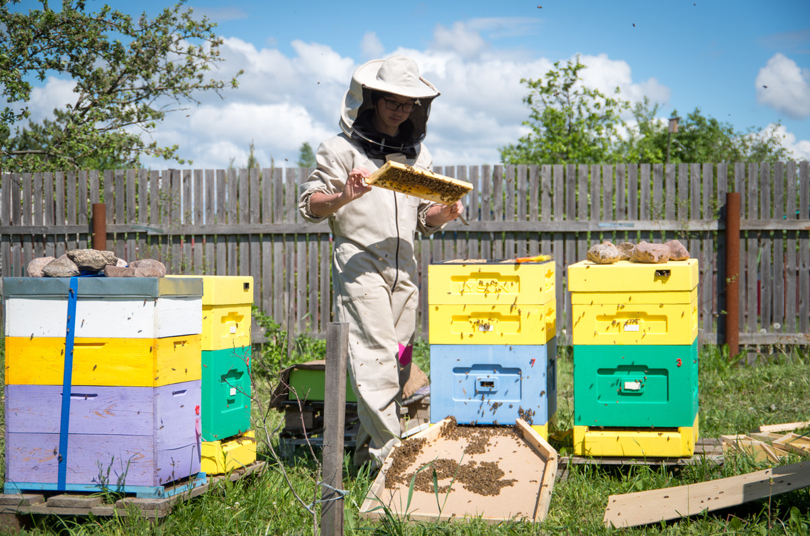
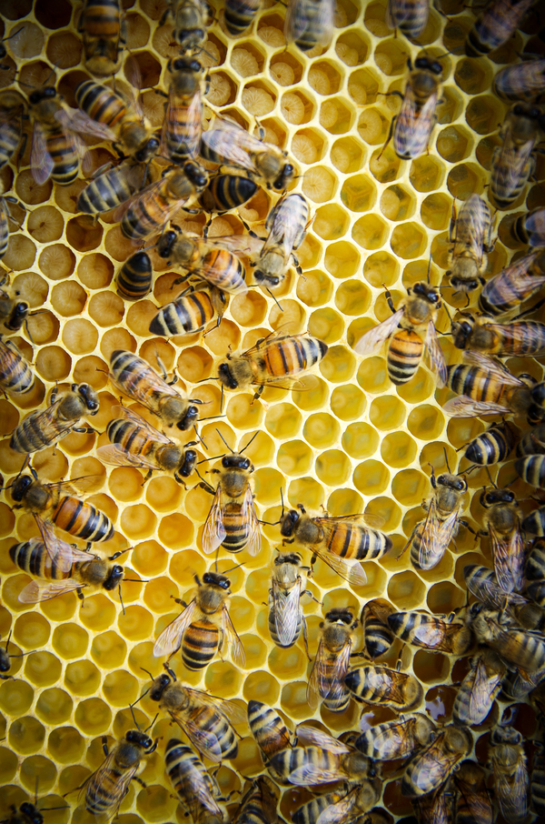
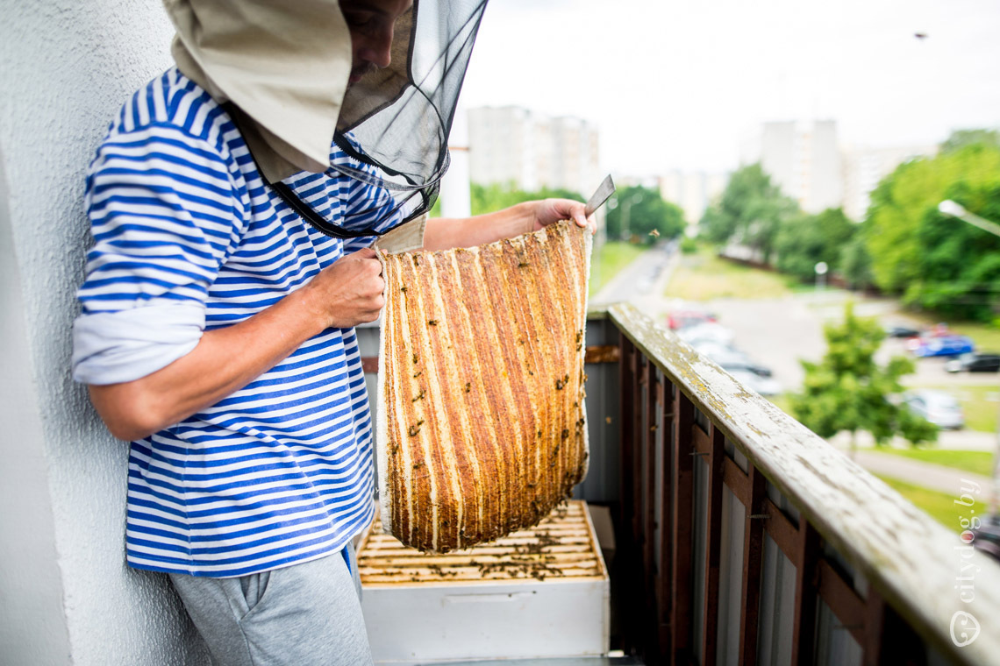
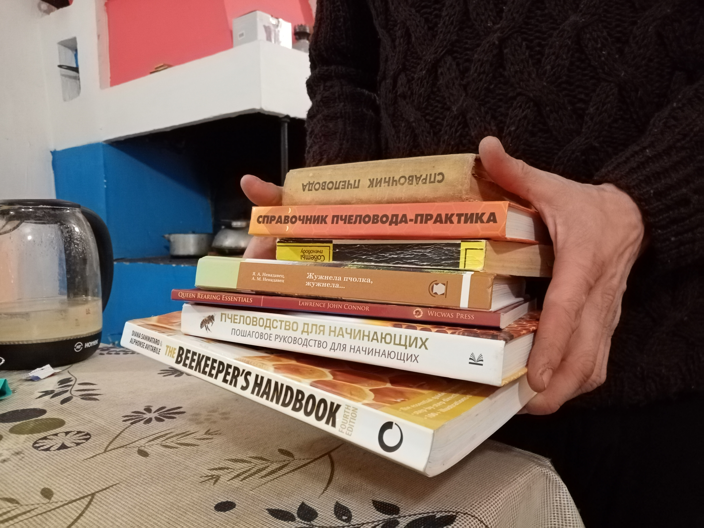
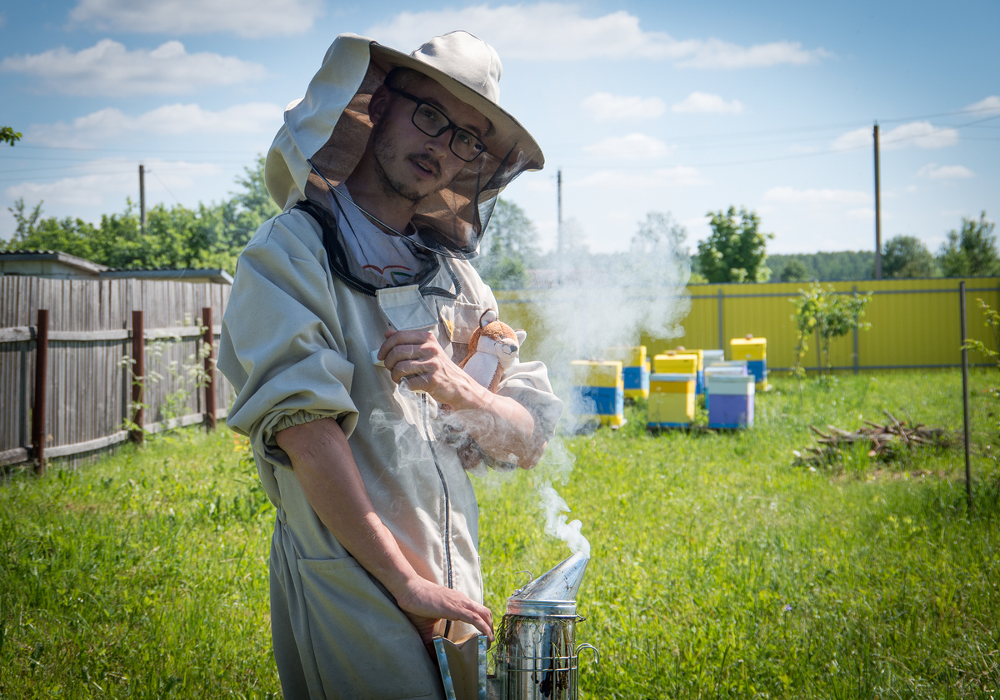

Цікавішся пчоламі? Жадаеш стаць пчаляром ці пчаляркай? Проста цікавішся пчалярствам?
Вы прыйшлі па адрасу.
Вы далучаецеся да курса без ніякіх ведаў, а завяршаеце з ведамі, каб пачаць свой
уласны пчальнік у садзе, лесе ці ў даху хмарачоса. Гэты кароткі курс дасць дастаткова
інфармацыі: чаму і як варта пачаць весці сваіх пчол, а таксама бачанне прадмета без
пагружэння ў вельмі вузкія дэталі.
Для гэтага я падрыхватаваў серыю лекцый і практычных заняткаў з ўводзінамі ў тэму пчол
і пчалярства.


Лекцыя складзена для абсалютных пачаткоўцаў. Удзельнікам непатрэбны папярэднія дадатковыя
веды.
У курсе раскрыю агульныя тэарэтычныя веды, як жывуць пчолы крулгы год, з чаго складаецца
вулей і інвентар сучаснага пчаляра, падзялюся практычнымі парадамі, як ўсталяваць вуллі,
засяліць і даглядаць пчол, збіраць і захоўваць ураджай, а таксама чым займаецца пчаляр
круглы год.
Унікальнасць курса
Мова: усе лекцыі на беларускай мове
Лекцыі два разы на тыдзень
Адбываюцца стрымамі з працягласцю 30-40 хвілін
Магчымасць задаваць пытанні падчас лекцыі
Разглядаюцца таксама практыкі арганічнага пчалярства
Удзельнікі лекцыі атрымаюць лаканічныя гайды па кожнай тэме
Заняткі ўключаюць: і тэорыю (16 заняткаў), і практыку (6 заняткаў)
Удзел: дыстанцыйны
Паспяховыя вучні запрашаюцца на пасеку ў якасці асістэнтаў
Выкарыстоўваецца сучасны досвед як мясцовых пчаляроў, так і замежных краін (Канада і
ЗША)
Магчымасць індывідуальных кансльтацый для удзельнікаў курса напрацягу ўсяго сезона
Што засвоіце і атрымаеце
Якія перавагі даюць пчолы і пчалярства, чаму вам варта падумаць ці пачаць пчалярыць .
Патрабаванні да пачынаючага пчаляра.
Якія выклікі чакаюць аматараў гэтага хобі, і як пераадоліць іх.
Як абраць месца для пасекі, вулей, яго ўсталяваць правільна.
Як засяліць пчол і даглядаць за імі напрацягу года і ў актыўны сезон.
Як здабываць ураджаі (мёд, воск, пяргу) і захоўваць яго.

Фінальны праект і сертыфікат
Кожны ўдзельнік курса, які пачне свой першы сезон, атрымае сертыфікат аб паспяховым яго
завяршэнні і магчымасці працягнуць стажыроўкі на маёй пасецы, у тым ліку ў гарадскіх умовах.
Што неабходна, каб далучыцца
Нічога, толькі інтарэс да пчолаў ці жаданне пачаць пчалярыць.
Для тых, хто хоча пачаць гэта хобі ўжо ў гэтым 2022 годзе.
Хто вырашыў пачаць пчалярства, але не разумее з чаго пачаць.
Не пчаляроў. Якія цікавяцца пчоламі і пчалярствам.
Не пчаляроў. Якія жадаюць атрымаць веды аператыўна без пагружэння ў вузкія дэталі.
Тыя, хто цікавіцца прыродай, ў прыватнасці, пчоламі, устолівай экалогіяй і сельскай
гаспадаркай.
А таксама ўсім каму цікава развіццё гарадскога пчалярства і супольнасці ў Беларусі.
Змест курса
Тэорыя

Якія плюсы самастойнага пчалярства як хобі. Адказнасць пчаляра.
Структура пчалінай сям’і. Жыццёвы цыкл пчалы ва ўсіх сезонах.
Якія інструменты і прылады патрэбны для пачаткoўца.
З чаго складаецца вулік. Як абраць вулік, які найлепш вам падыйдзе.
Што наконт вопраткі пчаляра і тэхнікі бяспекі?
Абранне месца для пчальніка.
Набываем і транспартуем пчол. Якія пчолы лепшыя. Засяленне ў вулік.
Інспекцыя вулікаў. Як часта, калі, як гэта рабіць зручней.
Кантроль за раеннем. Як мінімізавать колькасць дзеянняў.
Што рабіць, калі ўжаліла пчала падчас дагляду сям’і.
Здароўе пчол і суседзяў. Экалагічныя метады дагляду і прафілактыкі.
Як збіраць мёд, воск і пяргу. Ці заўсёды патрэбна медагонка.
Рыхтуемся да зімы. Мінімум асноўных крокаў.
Год пчаляра. Вясна, лета, восень, зіма. Асноўныя аперацыі, якія раблю.
Захоўваем рамкі і ўраджай. Як можна паступіць з ураджаем. Уласныя прыклады.
Пчалярства ў горадзе на сваім досведзе.
Практыка
Запальваем дымар і наогул розныя нюансы працы з ім.
Працуем з рамкамі ў вуліку. Алгартытм. На што звяртаць увагу.
Шукаем матку ў вуліку. Ізалюем яе.
Усталёўка вуліка. месца, мантаж асновы, спецыфіка.
Чысцім і вашчым рамкі, заліваем сваю вашчыну.
Транспартыроўка пчол.
Кошт курса
400 руб.*
*Можна аплочваць двума чэргамі (перад пачаткам і ў сярэдзіне курса).
Пра аўтара

Я, Міхаіл Волчак, адукатар, айцішнік і сацыятэхнік. Займаюся пчалярствам з 2019 года.
Гэта маё хобі. Вяду пчол, як у лугавой, лясной, так і гарадской мясцовасці. Люблю
спрабаваць новае, эксперыментаваць. Мне цікава дзяліцца напрацаваным досведам і шукаць
адзінадумцаў. Гарадское пчалярства - мае сэнс. Мне цікава развіваць супольнасць гарадскіх
пчаляроў, якім сімпатычна стварэнне якасных і максімальна экалагічна чыстых прадуктаў,
а таксама чыстага і ўстойлівага экалагічнага асяродку. Імкнуся да арганічнага пчалярства.